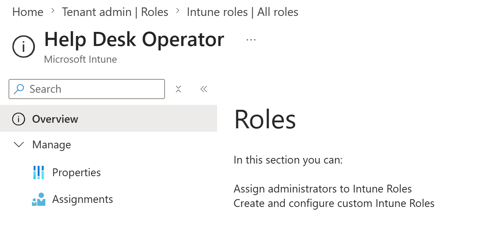
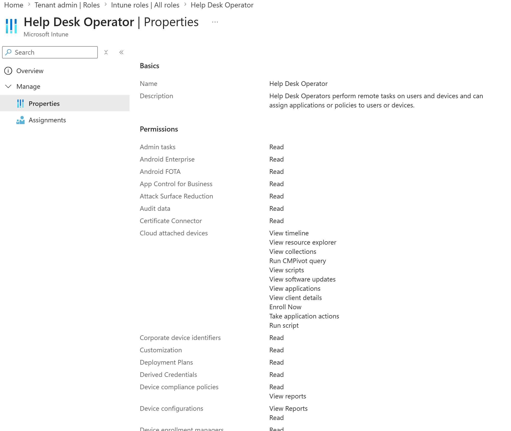
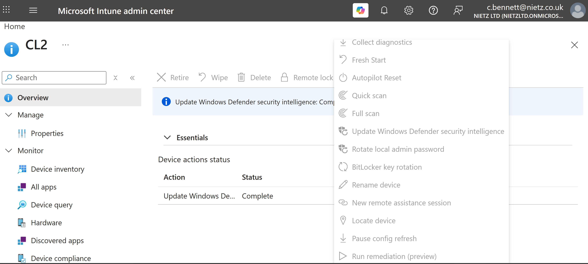
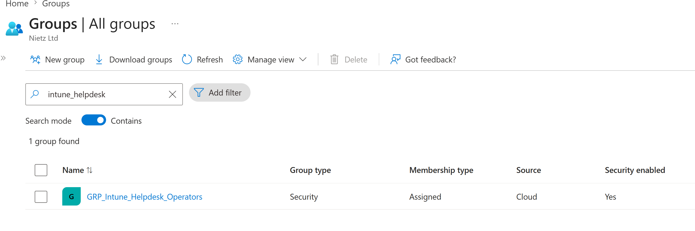
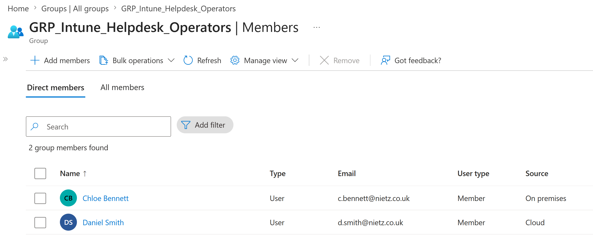
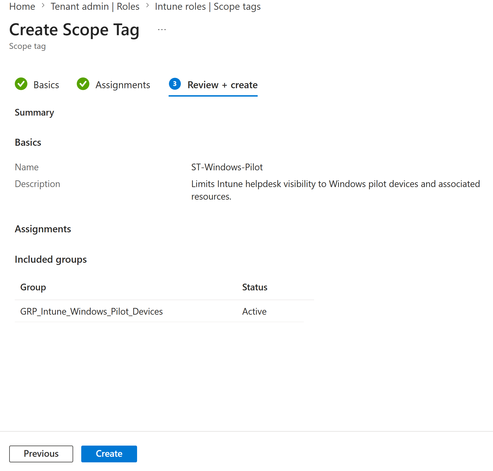
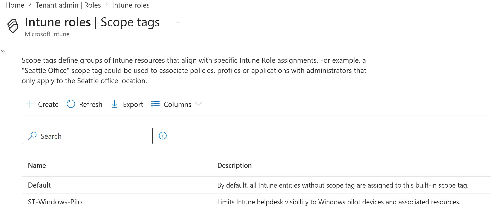
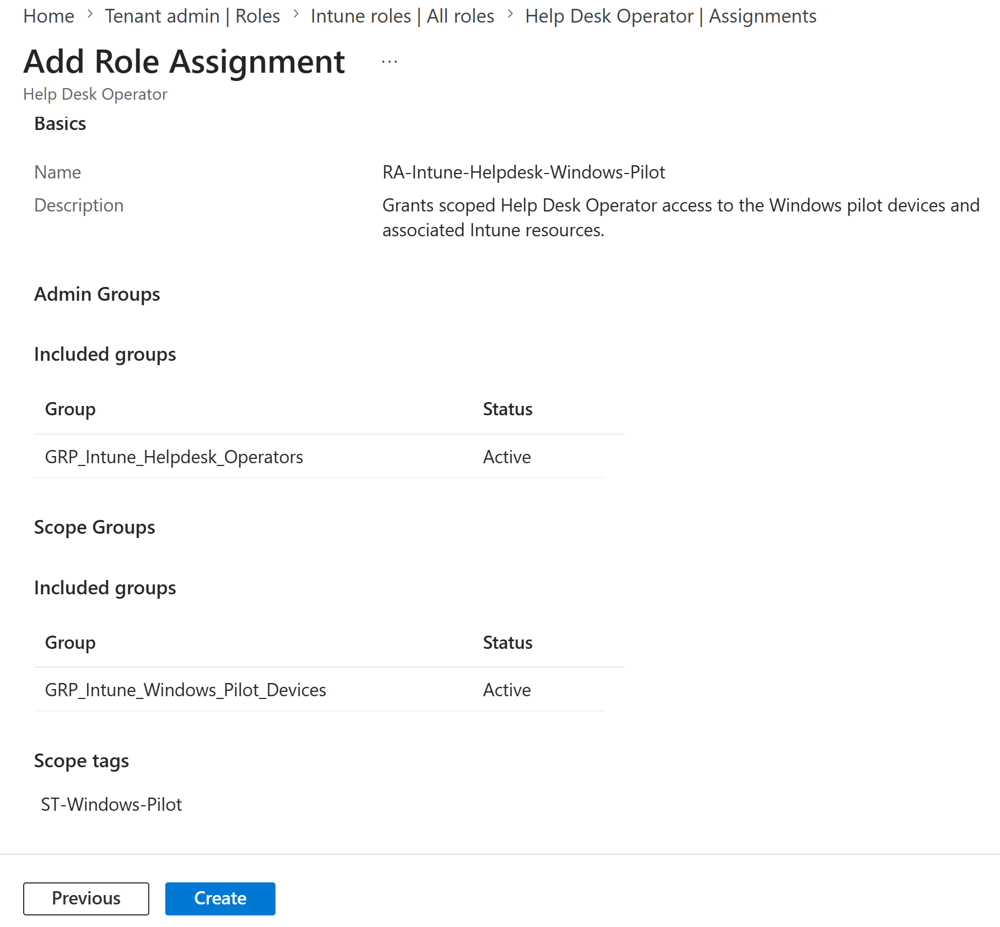
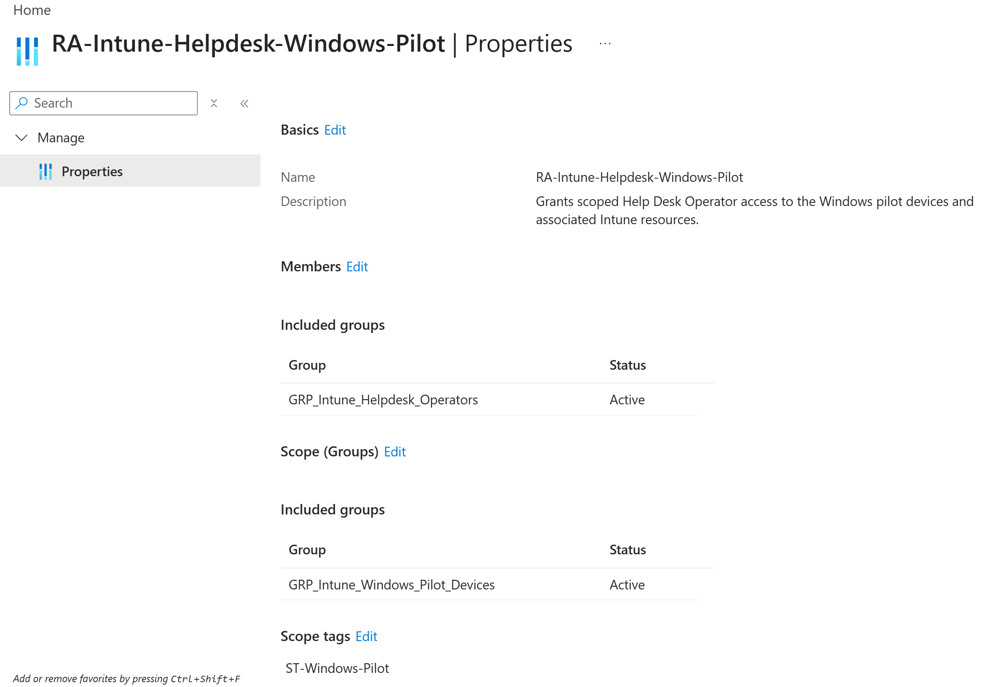
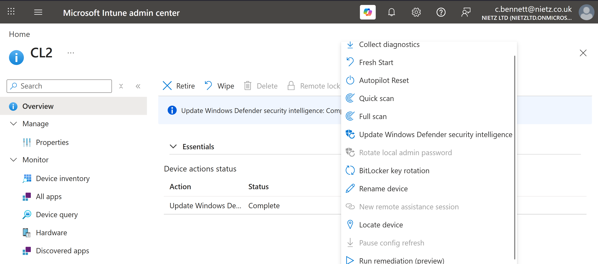

Lab 22: Intune RBAC and Scope Tags
Delegated scoped Intune endpoint-support permissions to the Service Desk through the Help Desk Operator role, a dedicated administrator group, a Windows pilot scope group and a custom scope tag, then validated Chloe Bennett's access boundary.
Overview
This lab extends the existing Service Desk permission model into Microsoft Intune. Chloe Bennett and Daniel Smith were already established as first-line analysts, but endpoint administration required a separate Intune role assignment rather than broad tenant administration.
The built-in Help Desk Operator role was assigned to a dedicated security group. The assignment used GRP_Intune_Windows_Pilot_Devices as its scope group and ST-Windows-Pilot as its scope tag, limiting the new Intune operational permissions to the Windows pilot context.
Objective
The objective was to implement least-privilege endpoint support by separating identity-helpdesk permissions from Intune device-management permissions. The lab also demonstrates how administrator groups, scope groups and scope tags combine within an Intune role assignment.
Environment
| Component | Value |
|---|---|
| Company | Nietz Ltd |
| Tenant domain | nietz.co.uk |
| Management platform | Microsoft Intune |
| Built-in Intune role | Help Desk Operator |
| Administrator group | GRP_Intune_Helpdesk_Operators |
| Administrator group members | Chloe Bennett and Daniel Smith |
| Scope group | GRP_Intune_Windows_Pilot_Devices |
| Custom scope tag | ST-Windows-Pilot |
| Role assignment | RA-Intune-Helpdesk-Windows-Pilot |
| Validation account | Chloe Bennett — c.bennett@nietz.co.uk |
| Validation device | CL2 |
| Previous lab dependency | Lab 21: Intune Application Deployment and Microsoft 365 Apps |
| Next lab | Lab 23: Edge Browser Security Baseline |
Configuration and Evidence
1. Help Desk Operator Role Identified
I opened the built-in Microsoft Intune Help Desk Operator role and confirmed that it was available for assignment.

2. Help Desk Operator Permissions Reviewed
I reviewed the role description and permission categories before assigning it. The screenshot shows an excerpt from the upper portion of the full permissions list; further permissions continue below the visible area.

Baseline Permission Check
3. Device Actions Disabled Before Intune RBAC
Before Chloe was added to the new Intune administrator group, I signed in as her and opened CL2. Her existing Microsoft Entra Helpdesk Administrator role allowed the device record to be viewed, but the Intune operational controls were unavailable.

Scoped RBAC Configuration
4. Dedicated Intune Helpdesk Group Created
I created GRP_Intune_Helpdesk_Operators as an assigned cloud security group for Intune administrative delegation.

5. Service Desk Members Added
I added Chloe Bennett and Daniel Smith as direct members. The group contains both a synchronised on-premises identity and a cloud-only identity.

6. Windows Pilot Scope Tag Reviewed
I configured the custom ST-Windows-Pilot scope tag and assigned it to GRP_Intune_Windows_Pilot_Devices. This connected the custom scope-tag context to the managed Windows pilot devices.

7. Custom Scope Tag Created
I created ST-Windows-Pilot alongside the built-in Default scope tag.

8. Scoped Role Assignment Reviewed
I configured RA-Intune-Helpdesk-Windows-Pilot with the dedicated helpdesk group as the administrator group, the Windows pilot device group as the scope group and ST-Windows-Pilot as the scope tag.

9. Scoped Help Desk Operator Assignment Created
I created the role assignment and confirmed that its administrator group and Windows pilot scope group were active, with the custom scope tag attached.

Validation
10. Scoped Intune Device Actions Enabled
After Chloe was added to GRP_Intune_Helpdesk_Operators and a fresh session was opened, I returned to CL2. The command bar and expanded actions menu now showed permitted device-management actions as enabled.

Validation Result
The lab confirmed a clear before-and-after permission change. Chloe could already read the CL2 record through her existing Microsoft Entra Helpdesk Administrator role, but remote Intune actions were disabled before the new role assignment. After membership in the dedicated Intune administrator group, operational actions became available for the Windows pilot device through the scoped Help Desk Operator assignment.
Key Technical Outcomes
- Reviewed the built-in Microsoft Intune Help Desk Operator role and its permission set.
- Created a dedicated security group for Intune helpdesk administration.
- Included both synchronised and cloud-only Service Desk identities in the delegated group.
- Created and assigned a custom Windows pilot scope tag.
- Used a Windows pilot device group as the Intune RBAC scope group.
- Combined the administrator group, scope group and scope tag in one role assignment.
- Validated the difference between read-only Entra access and operational Intune RBAC permissions.
- Demonstrated least-privilege endpoint support without granting full Intune Administrator access.
Summary
- I established the original read-only support baseline for Chloe Bennett.
- I created a dedicated Intune helpdesk group containing Chloe Bennett and Daniel Smith.
- I created
ST-Windows-Pilotand linked it to the Windows pilot device group. - I assigned the built-in Help Desk Operator role through a scoped Intune RBAC assignment.
- I confirmed that operational device actions became available on CL2 after the assignment.
- I retained the distinction between Microsoft Entra identity administration and Microsoft Intune endpoint administration.